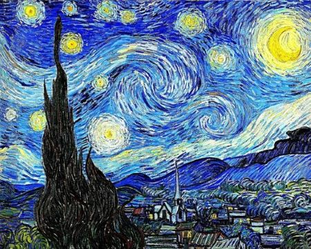
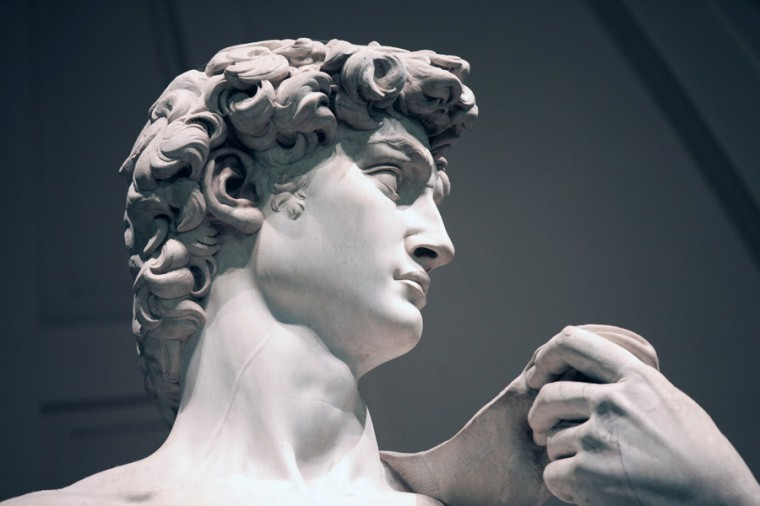
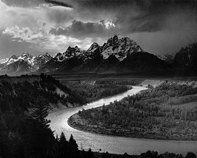

Art
Art is a diverse and multifaceted field that encompasses a wide range of creative expressions, including painting, sculpture, architecture, music, dance, theater, and more. At its core, art is a means of expressing ideas, emotions, and experiences in a visual or auditory form. Throughout history, artists have used different materials and techniques to create works that reflect their time, culture, and personal beliefs, and have influenced the development of art in various ways.
Art has the power to move us, to make us think, feel, and question our world. It can provide insight into different cultures, perspectives, and ways of life, and has the ability to transcend language and cultural barriers. Whether it's a masterpiece in a museum or a mural on a city wall, art has the potential to inspire, challenge, and connect us to our shared human experience.
Art is a diverse field that encompasses many different styles, genres, and mediums. Here are three of the most popular types of art:
-
Painting - Painting is one of the most widely recognized and popular forms of art. It involves applying paint to a surface, such as canvas or paper, to create a visual image. Paintings can be created using a variety of materials, including oil, acrylic, watercolor, and pastels. Some of the most famous paintings in history include Leonardo da Vinci's "Mona Lisa," Vincent van Gogh's "Starry Night," and Johannes Vermeer's "Girl with a Pearl Earring."
 -
Sculpture - Sculpture involves creating three-dimensional works of art by carving, modeling, or casting materials such as stone, metal, clay, or wood. Sculptures can be abstract or realistic, and can range in size from small figurines to large outdoor installations. Some of the most famous sculptures in the world include Michelangelo's "David," Auguste Rodin's "The Thinker," and the ancient Greek statue "Venus de Milo."
 -
Photography - Photography involves using a camera to capture images of the world around us. It has become an increasingly popular form of art in recent years, as technology has made it easier for anyone to take high-quality photos. Photographs can be used to document events, capture moments in time, or create works of art that explore themes such as identity, culture, and social justice. Some of the most famous photographers in history include Ansel Adams, Diane Arbus, and Henri Cartier-Bresson.
